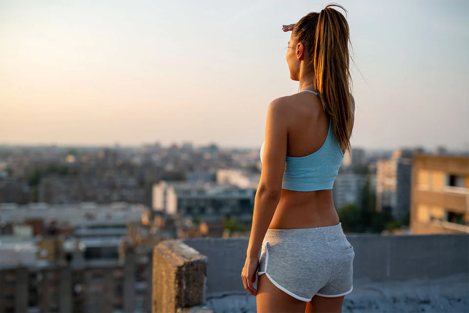

Придумай свой персональный план тренировок
и достигай новых высот каждый день
и достигай новых высот каждый день
Создай свою
идеальную форму
идеальную форму
Как происходит увеличение силы?
Сила — это способность прикладывать усилие к объекту, которая зависит от нейронной эффективности, мышечной массы, мастерства, биомеханики, уровня восстановления и мотивации. Нейронная эффективность помогает задействовать больше мышечных единиц, мастерство приходит с практикой, а мышечная масса повышает потенциал силы, но не гарантирует её. Биомеханика и анатомия влияют на эффективность движений, а усталость и стресс могут снижать результаты. Для увеличения силы важно тренировать целевые движения 2–4 раза в неделю с весами от 75% 1ПМ, избегать отказа, оставляя запас, и ограничивать кардио, чтобы не мешать восстановлению. Отличная техника и регулярная практика — ключ к прогрессу.
Важность сна и отдыха
Сон и восстановление — ключ к здоровью, мышечному росту и жиросжиганию. Недостаток сна снижает тестостерон, IGF-1, увеличивает кортизол, замедляет метаболизм и усиливает катаболизм мышц. Исследования показали, что больше сна способствует большему жиросжиганию и сохранению мышц. Лишение сна ухудшает реакцию, силу, выносливость и мотивацию. Для оптимальной производительности важно спать 7–9 часов в сутки.

Упражнения: могут ли они помочь вам справиться со стрессом?
Стресс может возникать по многим причинам: работа, отношения, здоровье и даже трафик. Пандемия усилила внимание к стрессу, и упражнения оказались одним из лучших способов борьбы с ним. Острый стресс помогает адаптироваться, а хронический — вреден для здоровья. Регулярные упражнения улучшают настроение и защищают от стресса. Всемирная организация здравоохранения рекомендует 150 минут умеренной физической активности в неделю. Важны также сон, правильное питание, поддержка окружающих и методы расслабления.

Как фитнес и правильное питание оказывают глубокое влияние на ваше здоровье
Ваше тело — это сосуд, который должен поддерживать вас в жизни. Вредные привычки, такие как неправильное питание, алкоголь, стресс и малоподвижный образ жизни, наносят вред организму, вызывая болезни. Регулярные упражнения и правильное питание улучшают физическое и психическое здоровье, снижают риск заболеваний, таких как диабет, инсульт и депрессия. Физическая активность улучшает работу сердца, легких и метаболизм, способствует снижению веса и укреплению мышц. Питание влияет на здоровье клеток, улучшая иммунитет и снижая воспаления. Совмещая упражнения с правильным питанием, вы улучшаете качество жизни и снижаете риск заболеваний.